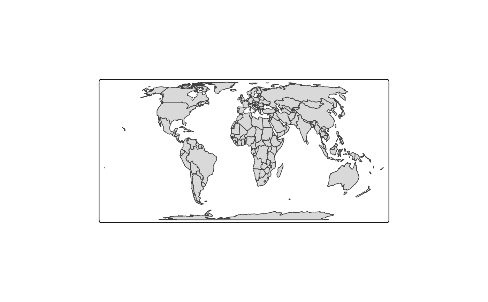
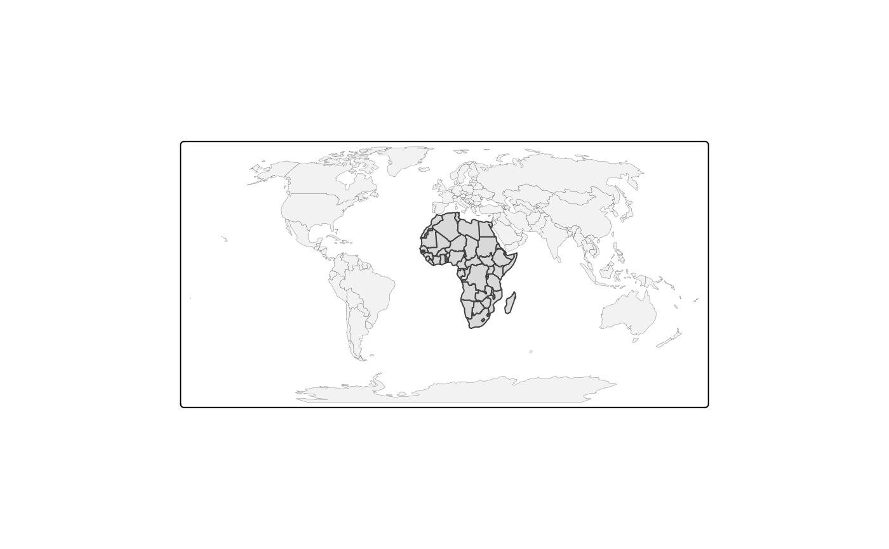
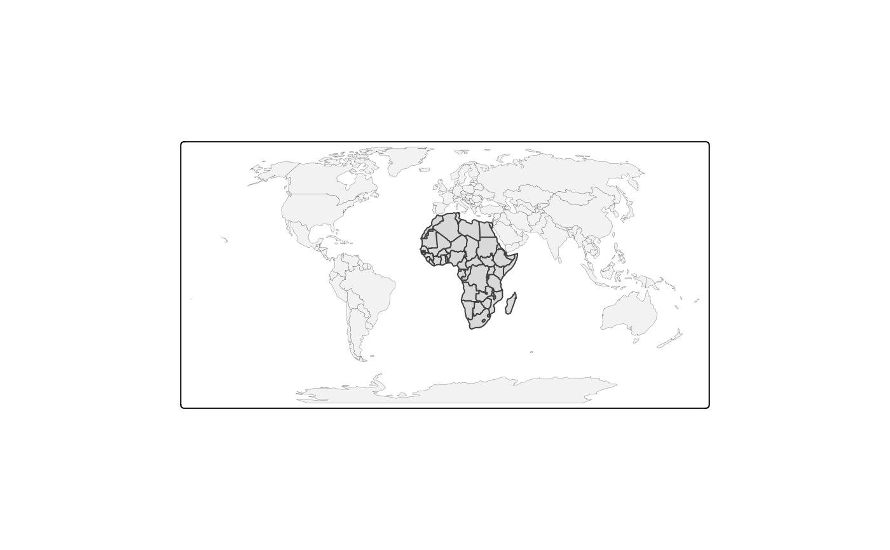

Creates a tmap-element that specifies a spatial data object, which we refer to as shape. Also the projection and covered area (bounding box) can be set. It is possible to use multiple shape objects within one plot (see tmap-element).
tm_shape(
shp,
name = NULL,
is.master = NA,
projection = NULL,
bbox = NULL,
unit = NULL,
simplify = 1,
point.per = NA,
line.center = "midpoint",
filter = NULL,
raster.downsample = TRUE,
raster.warp = TRUE,
...
)Arguments
- shp
shape object, which is an object from a class defined by the
sforstarspackage. Objects from the packagesspandrasterare also supported, but discouraged.- name
name of the shape object (character) as it appears in the legend in
"view"mode. Default value is the name ofshp.- is.master
logical that determines whether this
tm_shapeis the master shape element. The bounding box, projection settings, and the unit specifications of the resulting thematic map are taken from thetm_shapeelement of the master shape object. By default, the first master shape element with a raster shape is the master, and if there are no raster shapes used, then the firsttm_shapeis the master shape element.- projection
Map projection (CRS). Either a
crsobject or a character value (PROJ.4character string). By default, the projection is used that is defined in theshpobject itself.- bbox
bounding box. One of the following:
A bounding box (an
sfbbox object, seest_bbox, or any object that can be read bybb.Open Street Map search query. The bounding is automatically generated by querying
qfrom Open Street Map Nominatim. See https://wiki.openstreetmap.org/wiki/Nominatim.Another shape object, from which the bounding box is extracted.
If unspecified, the current bounding box of
shpis taken. The bounding box is feed tobb(as argumentx. The other arguments ofbbcan be specified directly as well (see..).- unit
desired units of the map. One of
"metric"(default),"imperial","km","m","mi"and"ft". Used to specify the scale bar (seetm_scale_bar) and to calculate densities for choropleths (see argumentconvert2densityintm_fill).- simplify
simplification factor for spatial polygons and spatial lines. A number between 0 and 1 that indicates how many coordinates are kept. See the underlying function
simplify_shape, from which the argumentskeep.unitsandkeep.subunitscan be passed on (see...). This requires the suggested packagermapshaper.- point.per
specification of how points or text labels are plotted when the geometry is a multi line or a multi polygon. One of
"feature","segment"or"largest". The first generates a point/label for every feature, the second for every segment (i.e. subfeature), the third only for the largest segment (subfeature). Note that the last two options can be significant slower. By default, it is set to"segment"if the geometry of shp is a (multi)points geometry or a geometrycollection, and"feature"otherwise.- line.center
specification of where points are placed for (multi)line geometries. Either
"midpoint"or"centroid". The former places a point at the middle of the line, the latter at the controid.- filter
logical vector which indicated per feature whether it should be included. Features for which filter is
FALSEwill be colored light gray (see thecolorNULLargument in the layer functions)- raster.downsample
Should a raster shape (i.e.
starsobject) be downsampled when it is loo large? What is too large is determined by the tmap optionmax.raster(seetmap_options). If it is downsampled, it will be downsampled to approximatelymax.rastercells. A message will be shown with the exact size.- raster.warp
Should a raster shape (i.e.
starsobject) be warped when the map is shown in different map projection (CRS)? IfTRUE(default) the raster is warped to a regular grid in the new projection. Otherwise, the raster shape is transformed where the original raster cells are kept intact. Warping a raster is much faster than transforming. Note that any raster shape with a projection other than 4326 will have to be warped or transformed in view mode.- ...
Arguments passed on to
bb(e.g.extcan be used to enlarge or shrinke a bounding box), andsimplify_shape(the argumentskeep.unitsandkeep.subunits)
Value
References
Tennekes, M., 2018, tmap: Thematic Maps in R, Journal of Statistical Software, 84(6), 1-39, doi: 10.18637/jss.v084.i06
Examples
current.mode <- tmap_mode("plot")
#> tmap mode set to plotting
data(World, metro, rivers)
tm_shape(World) +
tm_polygons() +
tm_layout("Long lat coordinates (WGS84)", inner.margins=c(0,0,.1,0), title.size=.8)

World$highlighted <- ifelse(World$iso_a3 %in% c("GRL", "AUS"), "gold", "gray75")
tm_shape(World, projection=3857, ylim=c(.1, 1), relative = TRUE) +
tm_polygons("highlighted") +
tm_layout("Web Mercator projection. Although widely used, it is discouraged for
statistical purposes. In reality, Australia is 3 times larger than Greenland!",
inner.margins=c(0,0,.1,0), title.size=.6)
 tm_shape(World, projection="+proj=robin") +
tm_polygons() +
tm_layout(
"Winkel-Tripel projection, adapted as default by the National Geographic Society for world maps.",
inner.margins=c(0,0,.1,0), title.size=.8)

tm_shape(World, projection="+proj=eck4") +
tm_polygons() +
tm_layout("Eckhart IV projection. Recommended in statistical maps for its equal-area property.",
inner.margins=c(0,0,.1,0), title.size=.8)
tm_shape(World, projection="+proj=robin") +
tm_polygons() +
tm_layout(
"Winkel-Tripel projection, adapted as default by the National Geographic Society for world maps.",
inner.margins=c(0,0,.1,0), title.size=.8)

tm_shape(World, projection="+proj=eck4") +
tm_polygons() +
tm_layout("Eckhart IV projection. Recommended in statistical maps for its equal-area property.",
inner.margins=c(0,0,.1,0), title.size=.8)
 # different levels of simplification
if (FALSE) {
tm1 <- tm_shape(World, projection="+proj=eck4", simplify = 0.05) + tm_polygons() +
tm_layout("Simplification: 0.05")
tm2 <- tm_shape(World, projection="+proj=eck4", simplify = 0.1) + tm_polygons() +
tm_layout("Simplification: 0.1")
tm3 <- tm_shape(World, projection="+proj=eck4", simplify = 0.25) + tm_polygons() +
tm_layout("Simplification: 0.25")
tm4 <- tm_shape(World, projection="+proj=eck4", simplify = 0.5) + tm_polygons() +
tm_layout("Simplification: 0.5")
require(tmaptools)
tmap_arrange(tm1, tm2, tm3, tm4)
}
# three groups of layers, each starting with tm_shape
if (FALSE) {
tm_shape(World, projection="+proj=eck4") +
tm_fill("darkolivegreen3") +
tm_shape(metro) +
tm_bubbles("pop2010", col = "grey30", scale=.5) +
tm_shape(rivers) +
tm_lines("lightcyan1") +
tm_layout(bg.color="lightcyan1", inner.margins=c(0,0,.02,0), legend.show = FALSE)
}
# restore current mode
tmap_mode(current.mode)
#> tmap mode set to plotting
# different levels of simplification
if (FALSE) {
tm1 <- tm_shape(World, projection="+proj=eck4", simplify = 0.05) + tm_polygons() +
tm_layout("Simplification: 0.05")
tm2 <- tm_shape(World, projection="+proj=eck4", simplify = 0.1) + tm_polygons() +
tm_layout("Simplification: 0.1")
tm3 <- tm_shape(World, projection="+proj=eck4", simplify = 0.25) + tm_polygons() +
tm_layout("Simplification: 0.25")
tm4 <- tm_shape(World, projection="+proj=eck4", simplify = 0.5) + tm_polygons() +
tm_layout("Simplification: 0.5")
require(tmaptools)
tmap_arrange(tm1, tm2, tm3, tm4)
}
# three groups of layers, each starting with tm_shape
if (FALSE) {
tm_shape(World, projection="+proj=eck4") +
tm_fill("darkolivegreen3") +
tm_shape(metro) +
tm_bubbles("pop2010", col = "grey30", scale=.5) +
tm_shape(rivers) +
tm_lines("lightcyan1") +
tm_layout(bg.color="lightcyan1", inner.margins=c(0,0,.02,0), legend.show = FALSE)
}
# restore current mode
tmap_mode(current.mode)
#> tmap mode set to plotting